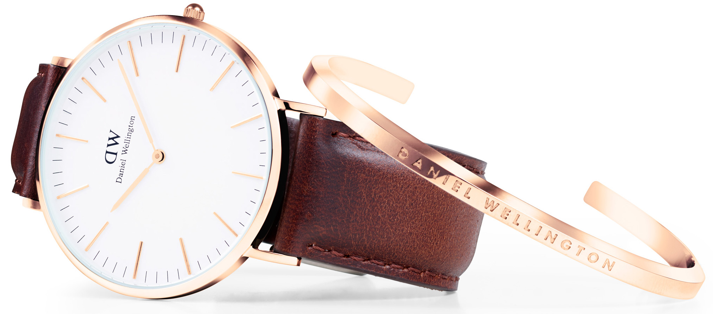
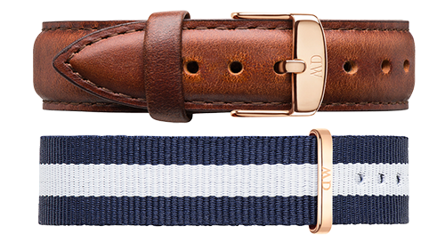
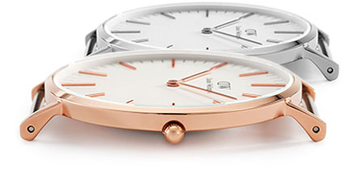
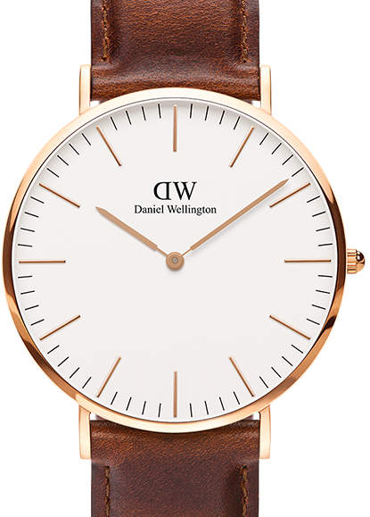
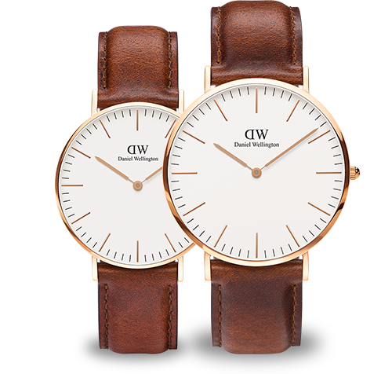

<nav-dir></nav-dir>

<section class="main-detail-wrapper">
    <section class="watch-title">
        <h1 id="watch-size">{{watch.category}} | {{watch.size}}</h1>
        <p id="selected-watch">{{watch.name}}</p>
    </section>

    <section class="details-carousel-container">
        <details-carousel-dir></details-carousel-dir>
    </section>


    <section class="watch-attribute-wrapper">
    <section class="watch-attribute-container">
        <aside class="attribute-size">{{watch.size}}</aside>
        <aside class="attribute-gold-color" ng-click="showSilver= false"><div id="gold-circle"></div> <br> <p id="gold-style">rose gold</p></aside>
        <aside class="attribute-silver-color" ng-click="showSilver = true"><div id="silver-circle"></div> <br> <p id="silver-style">silver</p></aside>
        <aside class="attribute-shopnow" ui-sref="checkout" ng-click="addToCart(watch)">${{watch.price}}  |  shop now</aside>
    </section>
    </section>


    <section class="watch-details-container">
        <p class="watch-description">{{watch.above_details}}</p>
    </section>

    <aside class="details-for-watch">
        <section class="details-container">
            <p class="details-title">the details</p>
            <table >
                <tr class="details-table-row">
                    <td>size</td>
                    <td class="table-data-style">{{watch.size}}</td>
                </tr>
                <tr>
                    <td>case thickness</td>
                    <td class="table-data-style">{{watch.case_thickness}}</td>
                </tr>
                <tr>
                    <td>dial color</td>
                    <td class="table-data-style">{{watch.dail_color}}</td>
                </tr>
                <tr>
                    <td>movement</td>
                    <td class="table-data-style">{{watch.movement}}</td>
                </tr>
                <tr>
                    <td>strap width</td>
                    <td class="table-data-style">{{watch.strap_width}}</td>
                </tr>
            </table>

            <table>
            <tr class="details-table-row">
                <td>strap</td>
                <td class="table-data-style">{{watch.strap}}</td>
            </tr>
            <tr>
                <td>strap color</td>
                <td class="table-data-style">{{watch.strap_color}}</td>
            </tr>
            <tr>
                <td>interchangeble straps</td>
                <td class="table-data-style">{{watch.interchangeble_strap}}</td>
            </tr>
            <tr>
                <td>water resistance</td>
                <td class="table-data-style">{{watch.water_resistent}}</td>
            </tr>
            </table>


        </section>

    </aside>

    <section class="inspiration-wrapper">
        <p class="inspiration-title">inspiration</p>
        <p class="inspiration-subtitle">{{watch.category}} {{watch.name}} on instagram</p>
        <p class="inspiration-bottom-line"></p>
    </section>

    <section class="inspiration-carousel-wrapper">
        <inspiration-dir></inspiration-dir>
    </section>

    <section class="perfect-match-cuff-wrapper">
        <section class="perfect-match-container">
        <aside class="cuff-text">
            <p class="perfect-match-title">the perfect match</p>
            <p class="cuff-details">Bring out the very best of your Daniel Wellington watch with the <br> Classic Cuff</p>
            <p href="#" class="cuff-link">Buy a matching cuff here</p>
        </aside>

        <aside class="cuff-image">
            
        </aside>
        </section>
    </section>

    <section class="perfect-match-cuff-wrapper">
        <section class="perfect-match-container">
            <aside class="cuff-text">
                <p class="perfect-match-title">leather or nato?</p>
                <p class="cuff-details">Our carefully selected assortment of elegant leather straps and <br> playful NATO straps allows you to change the look of your watch <br> depending on your style, mood and personal preference.</p>
                <p href="#" class="cuff-link">See all watch bands</p>
            </aside>

            <aside class="cuff-image">
                
            </aside>
        </section>
    </section>

    <section class="simplistic-dial-container">
        <aside class="simple-title-centering">
            <aside class="simple-title">simplistic dial</aside>
            <div class="simple-title-line"> <!-- This is the line--></div>
        </aside>
            <aside class="simple-title-details-centering">
            <aside class="simple-title-details">A plain and simplistic eggshell white dial for a <br> timeless look.</aside>
        </aside>
    </section>

    <section class="ultra-thin-container">
        <aside class="ultra-thin-centering">
            <aside class="ultra-thin-title">ultra-thin case design</aside>
            <aside class="ultra-thin-title-detail">The ultra-thin case measures 6mm and is available in rose-gold and <br> silver</aside>
        </aside>

        <aside class="ultra-img-container">
            
            <p class="small-details">The ultra-thin case measures 6mm</p>
        </aside>
    </section>

    <section class="flagship-container">

        <aside class="flagship-img-style">
            
        </aside>

        <aside class="flagship-text-style">
            <p class="flagship-title">flagship <br> collection</p>
            <div class="flagship-line"><!-- this is the line--> </div>
            <p class="flagship-title-details">The flagship classic collection is a fan favorite, and truly represents our simplistic design approach.</p>
        </aside>
    </section>

    <section class="two-size-container">
        <aside class="two-size-img">
            
        </aside>

        <aside class="two-size-text">
            <p class="two-size-title">two sizes</p>
            <p class="two-size-title-details">The Classic collection is available in two sizes; 36mm and 40mm.</p>
            <p href="#" class="two-size-link">Classic Collection 36 mm</p>
        </aside>
    </section>

</section>
<footer-dir></footer-dir>